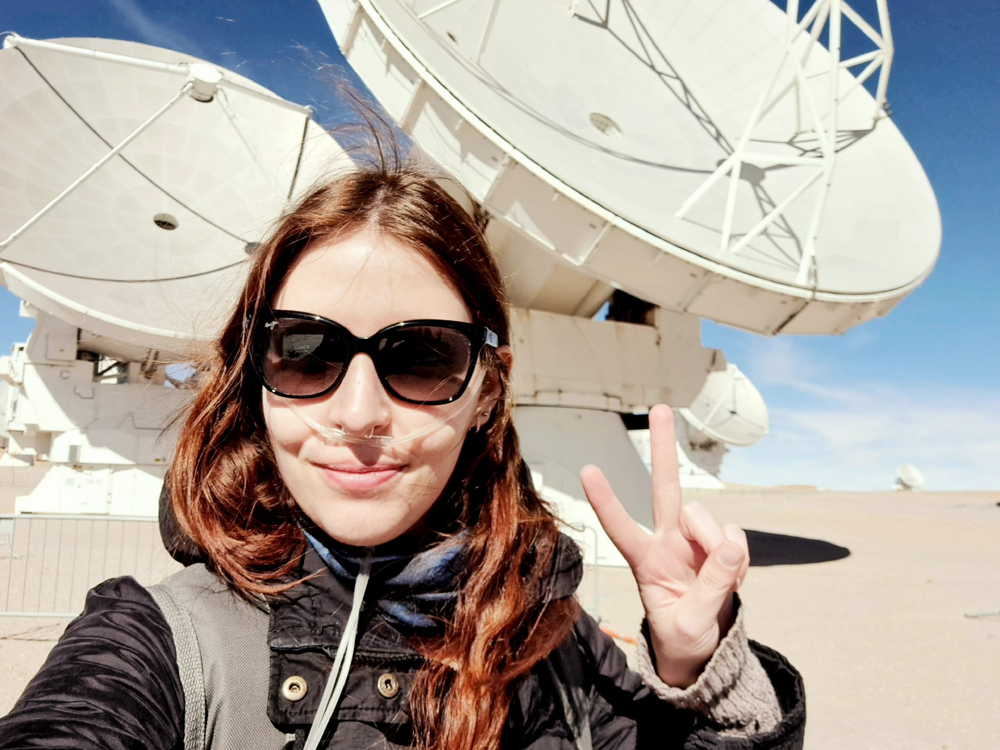
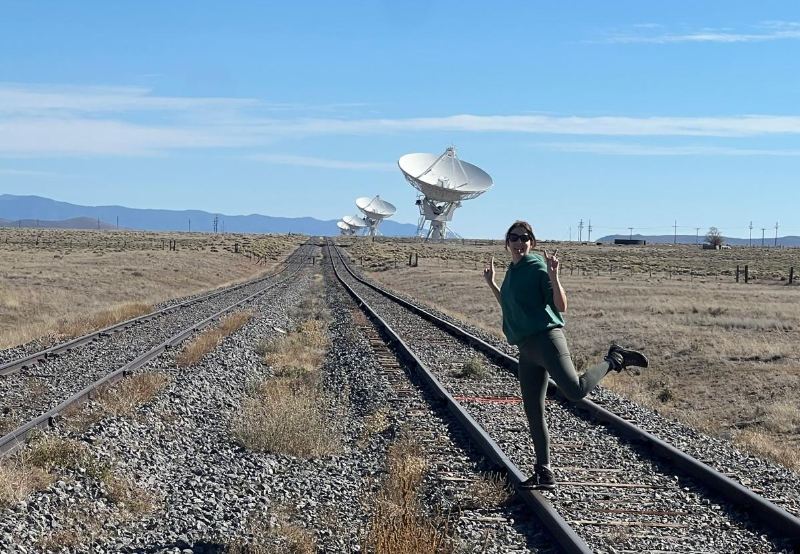
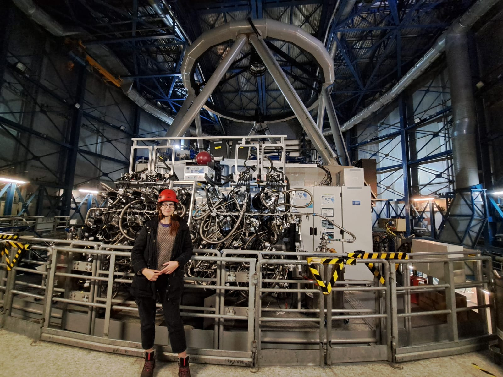
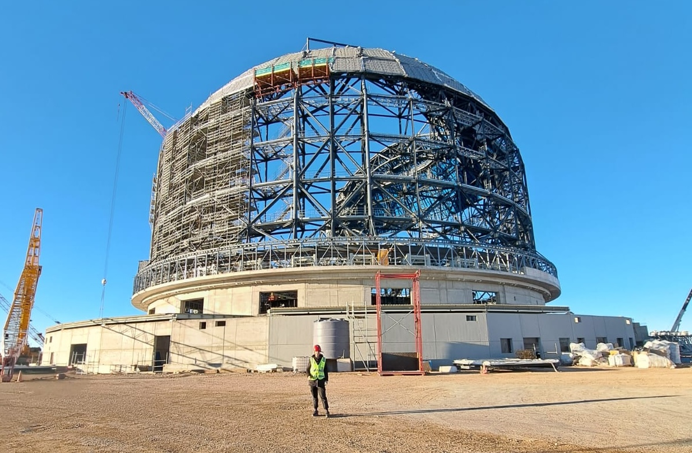

"Collecting" observatories
A brief overview of the world-class observatories I got to visit.

ALMA: The Atacama Large (sub-)Millimeter Array
Located at 5000 m of altitude in Chile's Chajnantor Plateau (hence the oxygen mask!), ALMA uses 66 radio antennas to capture high-resolution observations of the universe. Having analyzed ALMA images since my Bachelor's studies, visiting my absolute favorite facility in person was an unforgettable memory!

VLA: The Karl G. Jansky Very Large Array
A huge thanks to the VLA! It's observations of the protoplanetary disk surrounding the young star GM Aurigae are the core of my PhD's work. Located in a desert stretch northwest of Socorro, New Mexico, this iconic array is surprisingly accessible to visit. You can even drive right through it.

VLT: The Very Large Telescope
Honoured to stand before MUSE, one of the most sought-after instruments at the VLT. Contrary to ALMA and VLA, MUSE collects optical and near-infrared light. No MUSE data for me just yet, but I am interested in exploring VLA–MUSE synergies to study how stellar winds affect disks.

ELT: The ESO Extremely Large Telescope
What an incredible feeling to witness the construction of the world’s biggest eye on the sky! Starting in 2029, its massive 39-meter mirror will collect optical and near-infrared light, driving revolutionary discoveries across astrophysics. For my research, it will offer an unprecedented view into the innermost regions of protoplanetary disks where Earth-like planets are born.